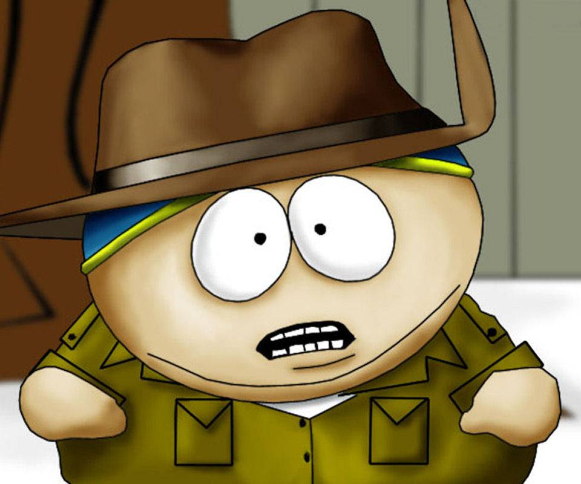

Нейронная сеть
Эта статья о понятии в программировании; о сетях нервных клеток живых организмов см. Нервная сеть.
Схема простой нейросети. Зелёным цветом обозначены входные нейроны, голубым — скрытые нейроны, жёлтым — выходной нейрон
Нейро́нная сеть[1] (также искусственная нейронная сеть, ИНС) — математическая модель, а также её программное или аппаратное воплощение, построенная по принципу организации и функционирования биологических нейронных сетей — сетей нервных клеток живого организма. Это понятие возникло при изучении процессов, протекающих в мозге, и при попытке смоделировать эти процессы. Первой такой попыткой были нейронные сети У. Маккалока и У. Питтса[2]. После разработки алгоритмов обучения получаемые модели стали использовать в практических целях: в задачах прогнозирования, для распознавания образов, в задачах управления и др.
ИНС представляет собой систему соединённых и взаимодействующих между собой простых процессоров (искусственных нейронов). Такие процессоры обычно довольно просты (особенно в сравнении с процессорами, используемыми в персональных компьютерах). Каждый процессор подобной сети имеет дело только с сигналами, которые он периодически получает, и сигналами, которые он периодически посылает другим процессорам. И, тем не менее, будучи соединёнными в достаточно большую сеть с управляемым взаимодействием, такие по отдельности простые процессоры вместе способны выполнять довольно сложные задачи.
С точки зрения машинного обучения, нейронная сеть представляет собой частный случай методов распознавания образов, дискриминантного анализа, методов кластеризации и т. п.
С точки зрения математики, обучение нейронных сетей — это многопараметрическая задача нелинейной оптимизации.
С точки зрения кибернетики, нейронная сеть используется в задачах адаптивного управления и как алгоритмы для робототехники.
С точки зрения развития вычислительной техники и программирования, нейронная сеть — способ решения проблемы эффективного параллелизма[3].
С точки зрения искусственного интеллекта, ИНС является основой философского течения коннекционизма и основным направлением в структурном подходе по изучению возможности построения (моделирования) естественного интеллекта с помощью компьютерных алгоритмов.
Нейронные сети не программируются в привычном смысле этого слова, они обучаются. Возможность обучения — одно из главных преимуществ нейронных сетей перед традиционными алгоритмами. Технически обучение заключается в нахождении коэффициентов связей между нейронами. В процессе обучения нейронная сеть способна выявлять сложные зависимости между входными данными и выходными, а также выполнять обобщение. Это значит, что в случае успешного обучения сеть сможет вернуть верный результат на основании данных, которые отсутствовали в обучающей выборке, а также неполных и/или «зашумленных», частично искажённых данных.
